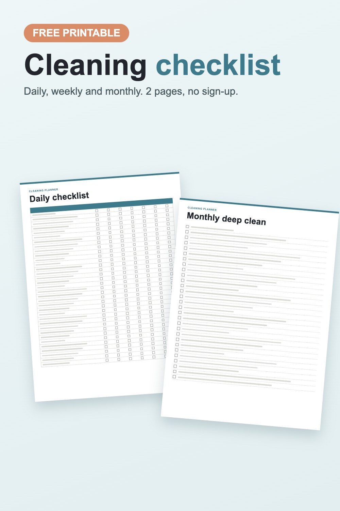

A simple cleaning routine on two pages: 15 minutes a day, one room per weekday, and a short monthly deep clean and declutter list. No sign-up, just download.
Download free PDF (A4)Download free PDF (US Letter)
The 32-page Cleaning Planner adds checklists for 6 rooms, a 30-day declutter challenge, a donate / sell / toss tracker, 4 weekly planners, family and kids chore charts, a stain removal guide and a home maintenance schedule. Hyperlinked for iPad.
See the cleaning plannerMore free printables: free monthly budget template, free 2027 calendar.